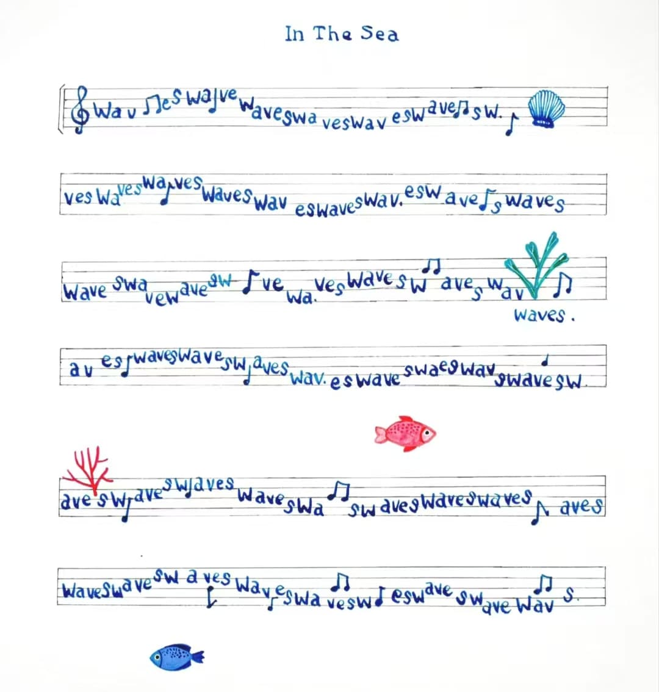

Xiaoyun Liu
Introduction
Hello, I’m Xiaoyun Liu, currently an undergraduate student in Information Management and Information Systems at Xi'an University of Electronic Science and Technology, class of 2022. Although my academic focus is on information technology, art has always been an essential part of my life since childhood.
Education
- University of the Arts London, Camberwell College of Art, MA: Painting (09/2024 - 12/2025)
- Central Academy of Fine Arts (CAFA), Bachelor of Fine Arts (09/2020 - 07/2024)
My Works
My works focus on fleeting moments that we might not notice when we are immersed in them in everyday life until we lose and depart from them...
Artistic Background
I use light and colour to create dreamy and fluid worlds that express the feelings, emotions, memories, and infinite reveries of space and time we experience and imagine through those moments.